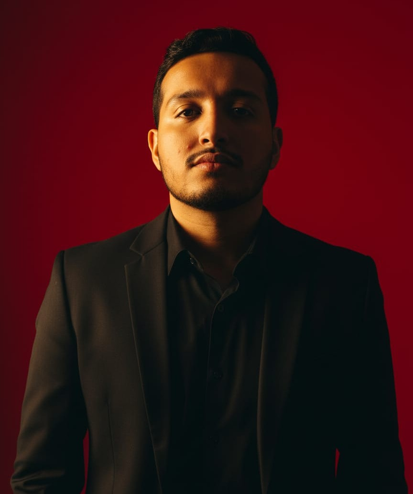

Perfil Profesional

Adán Castillo Rodríguez
Estudiante de Ingeniería en Sistemas y Negocios Digitales cursando el 5to semestre en la Universidad en el IEST Anahuac Campus Tampico. Programador autodidacta, especialista en creación de páginas web y soy jugador de poker profesional. Una vez chambié en el otro lado, un buen jale la verdad, pagaban 16 dólares la hora y con eso me compré una pc. Sé poner pisos, cargar pisos, taladrar, poner drywall, hablo inglés, español nativo, francés solo del 1 al 20 y algunas frases, y me gusta pelear. Tengo 21 años, me gusta la chamba, de verdad, me encanta la chamba, nací por mi madre y moriré por la chamba.
💻 Habilidades
- Python, JavaScript, HTML/CSS
- Criptografía: AES, RSA, SHA
- Contabilidad financiera y analista de Crypto
💼 Experiencia Laboral
🎓 Formación Académica
📜 Certificaciones
- Diplomado en Criptografía Aplicada
- Certificacion en Creación de Protocolos de Investigación
Datos de Contacto
- 📧 Correo: adan.castillo@iest.edu.mx
- 📞 Teléfono: +52 833 435 7142
- 📍 Ubicación: Tampico, Tamulipas
- 🔗 Git: cstadan